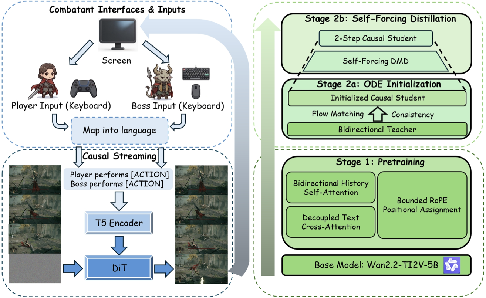
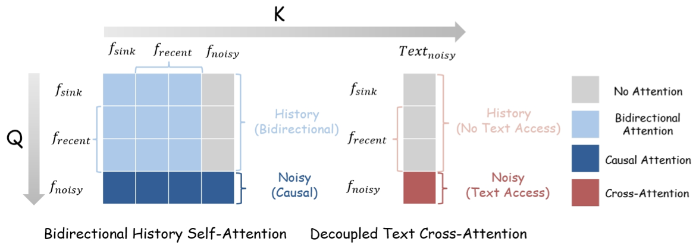
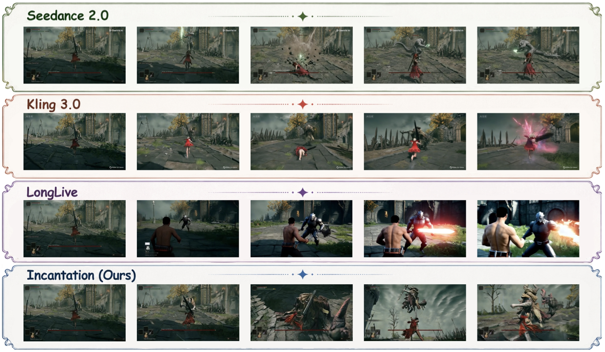
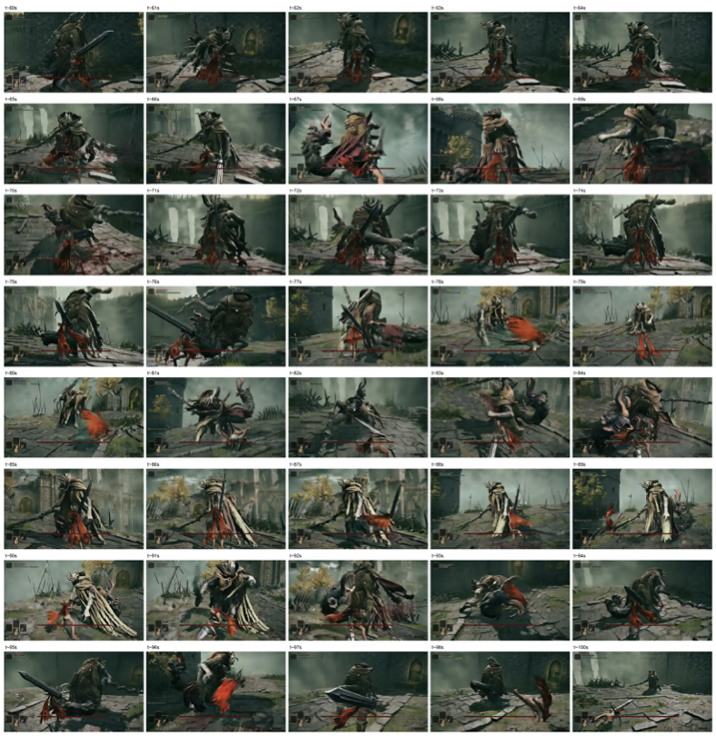
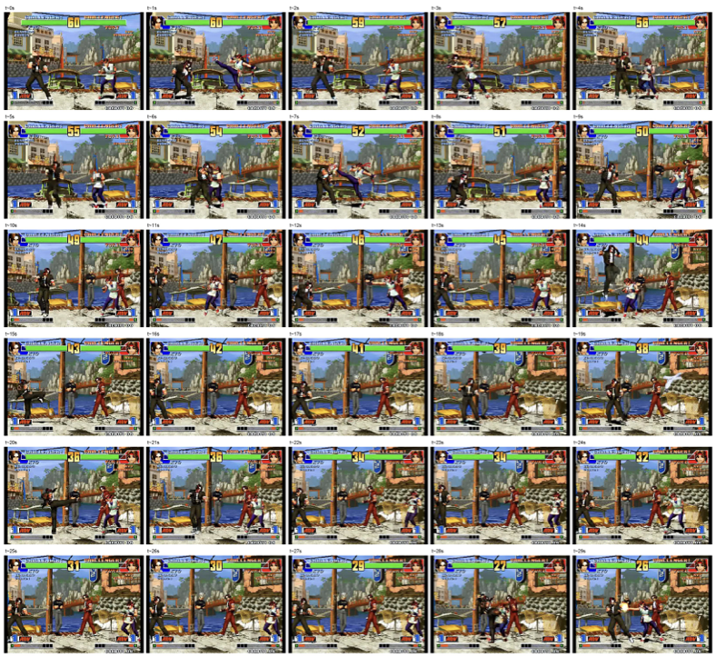
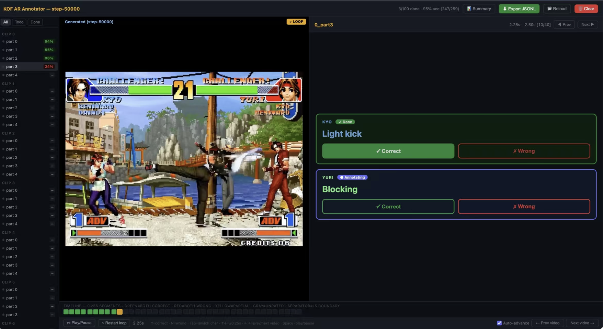

Animation labels are local
Per-engine or per-entity action IDs bind meaning at design time. The same index can mean unrelated moves for different entities.
Natural Language as the Action Interface for Multi-Entity Video World Models
Natural language is the action interface.
It beats closed action IDs where control must generalize.
89% vs. 43% cross-entity transfer. 90% vs. 0% OOV control. 3-entity control from two-entity training.
 Presented by Matrix Team — Neural Interactive Simulation
Presented by Matrix Team — Neural Interactive Simulation
Latest updates on Incantation.
Motivation
Existing interactive video world models often inherit their controls from engines, devices, or scene-level captions. Incantation asks a sharper question: should a world model be controlled by closed action IDs, or by language that names the action itself?
Natural language is not just a captioning convenience. It is the action interface that lets controls transfer across bodies, entities, and worlds.
Player performs [ACTION_P]. Boss performs [ACTION_B].
Insight
The paper frames the problem as a natural-language action-interface problem, not just a bigger-model problem: control should name what each entity does, not which engine button was pressed.
Per-engine or per-entity action IDs bind meaning at design time. The same index can mean unrelated moves for different entities.
Keyboard or controller inputs naturally steer one controllable side, leaving non-player entities outside the direct action channel.
A holistic scene description cannot cleanly assign simultaneous, distinct actions to several entities at frame-level granularity.
Design
The key is not just adding text. The model must route each entity's prompt to the current frame, preserve visual history, and stay stable when the context slides for minutes.
Every 0.25 s latent frame receives a structured prompt such as Player performs [ACTION_P]. Boss performs [ACTION_B]. Adding another controllable entity means adding another slot, not changing the backbone.
Each target frame attends to one sink frame, seven recent clean latent frames, and the noisy target. The recent window spans 1.75 s; the sink anchors global scene and identity.
History keeps bidirectional self-attention from the pretrained video backbone. Text cross-attention is masked away from committed history, preventing the current action prompt from leaking backward.
The causal student is initialized by ODE matching, distilled with Self-Forcing, and caches raw keys before RoPE. Local positions are applied on the fly after each cache slide.

Training and streaming workflow: language-conditioned pretraining followed by ODE-initialized Self-Forcing distillation.
The appendix crosses history attention with text-attention scope. The chosen design keeps the pretrained bidirectional history prior and isolates text to the noisy target frame.
| History / Text scope | FVD down |
|---|---|
| Bidir history + noisy-only text | 201.9 |
| Bidir history + all-frame text | 197.1 |
| Causal history + noisy-only text | 245.1 |
| Causal history + all-frame text | >1100, unstable |
Takeaway: causal history hurts the pretrained video prior, and full text cross-attention can contaminate committed history.
The appendix evaluates the same student at 10 s and 30 s. Without KV sliding, quality collapses with horizon; with sliding, FVD stays nearly flat.
| Cache setting | 10 s FVD | 30 s FVD |
|---|---|---|
| No sliding | 439.6 | 996.9 |
| kv=7, cap=16 | 138.6 | 139.2 |
| kv=4, cap=16 | 140.5 | 141.9 |
Takeaway: the cache window, not an ever-growing history, carries the online visual context.
Design detail
Each action prompt describes the current frame, so Incantation prevents that prompt from contaminating committed history frames.

Text cross-attention is applied only to the noisy target frame; history frames keep bidirectional self-attention.
Conventional full text cross-attention can cause temporal cross-contamination: the current action prompt leaks into past frames and creates action echoes. Incantation masks text cross-attention away from history tokens, so prompt changes remain frame-local.
For long horizons, raw keys are cached before RoPE rotation and rotated on the fly with updated local positions. This avoids stale positional geometry after sliding-window evictions.
Claim and proof
This is the central claim. The experiment is organized as a three-tier proof: first show language is not weaker on seen actions, then show it transfers across entities, then show it handles prompts outside the closed ID vocabulary.
Natural language wins because it carries action meaning. Action IDs can memorize frequent controls, but they do not say what the action means. That gap appears exactly when the interface must generalize.
On frequent in-distribution actions, both interfaces receive strong supervision. NL reaches 95% ACA and Action-Index reaches 89%, ruling out a simple optimization or capacity story.
The same actions are issued to entities that never performed them in training. NL reaches 89% while Action-Index drops to 43%, exposing the missing compositional semantics.
OOV prompts are natural-language action descriptions outside the closed ID vocabulary. NL reaches 90% across 40 trials; Action-Index has no input slot and therefore 0% coverage.
Natural-language ACA on in-distribution prompts, versus 89% for Action-Index.
Cross-entity semantic transfer ACA, versus 43% for Action-Index.
Aggregate ACA on out-of-vocabulary action prompts; Action-Index has no input slot and scores 0%.
The same prompt-slot interface extends from two-entity training to simultaneous control of three entities.
| Proof tier | Natural language | Action-Index | What it proves |
|---|---|---|---|
| Seen-action parity | 95% ACA | 89% ACA | Natural language is a viable action interface, not a weaker replacement. |
| Cross-entity transfer | 89% ACA | 43% ACA | Natural language carries compositional action semantics across entities. |
| Out-of-vocabulary prompts | 90% ACA | 0% coverage | Natural language remains an interface when the ID vocabulary ends. |
Tier I gives Action-Index no target-entity fallback. Tier II gives it a similar motion. Tier III gives it same-named actions. Natural language still leads throughout.
Tier I: double light blade to Knight, 80% vs. 15%. Tier II: Crucible tail to Margit, 90% vs. 60%. Tier III: natural language stays at least 80% across shared-label transfers.
Text-initialized frozen IDs inherit language priors but stay closed-vocabulary. Trainable text-initialized IDs specialize to entity context and revert toward the joint-vocabulary baseline.
A VLM pairwise judge gives natural language +70 pp on Tier I and +10 to +25 pp on Tier III. Tier II remains human-rated because game-specific luminous-tail cues are hard for a general VLM.
Interface scaling / Parallel control
Natural-language prompt slots scale the action interface: the model is trained on two-entity scenes, then asked to control player, Margit, and Crucible Knight simultaneously.
What to look for: each actor follows its own action phrase in the same camera stream, instead of collapsing into a single global caption.
The three slots issue Shielding, Blade Throw, and Roll Forward at the same time in one shared scene.

Qualitative comparison on Elden Ring. Strong video generators preserve visual fidelity, but Incantation is the method designed for per-frame player-boss action control.
Video evidence / Baseline comparison
These clips belong with the baseline figure: they test whether a visually strong video generator can also expose an explicit per-entity action channel.
Per-frame language slots control player and boss actions under one shared camera.
High visual fidelity, but no explicit per-entity interactive action interface.
Compared under matched high-level scene intent, without frame-local entity action slots.
A strong long-video baseline, evaluated for the same player-boss action-control purpose.
Generalization evidence
The same architecture and recipe are applied to Elden Ring and the visually unrelated King of Fighters world, changing only action-vocabulary slots. Real-time streaming is an enabling system property, not the core interface claim.

Elden Ring rollout sampled from a continuous generated session.

KOF rollout under the same architecture and training recipe.
Evidence / Long horizon
A quick visual check for action consistency and temporal coherence under continuous control.
The online student keeps the action interface usable beyond a short clip, because the cache slides while positions stay local.
The appendix reports five independent roughly 118-minute Margit rollouts. Across 2,025 evaluated windows, FVD stays stable instead of degrading monotonically with horizon.
| World | Model | Steps | FVD down | ACA up | Latency |
|---|---|---|---|---|---|
| Elden Ring | Teacher (bidirectional) | 50 | 206.2 | 93.2% | 12058.7 ms/frame |
| Elden Ring | Student (causal) | 2 | 138.6 | 90.4% | 163.4 ms/frame |
| KOF | Teacher (bidirectional) | 50 | 170.1 | 94.9% | 10986.0 ms/frame |
| KOF | Student (causal) | 2 | 162.9 | 94.0% | 165.2 ms/frame |
Dataset trust
Incantation will release code, checkpoints, and a 128-hour frame-accurate multi-entity action dataset spanning Elden Ring and The King of Fighters.
30 h of Margit and 15 h of Crucible Knight boss-fight footage with player and boss action triplets read from engine memory.
About 5,000 one-minute fighter-pair clips, collected with the same per-frame action-labeling protocol.
Each VAE-compressed latent frame receives per-entity action prompts and aligned supervision.

Blinded ACA interface. Annotators see the generated clip and per-entity target action, but not whether it came from NL or Action-Index.
The sample includes a raw memory-derived CSV and a processed JSONL entry. The processed format pairs each clip with global captions, participant descriptions, and per-entity action timelines.
Raw CSV sample · Processed JSONL sample
{
"video": "20260117_180710_0.mp4",
"prompt": {
"participants": {
"person_1": {
"timeline": [
{"start_time": 0.0, "end_time": 2.375, "short_caption": "Charge forward"},
{"start_time": 5.5, "end_time": 6.875, "short_caption": "Greatsword thrust"}
]
},
"boss_1": {
"timeline": [
{"start_time": 3.75, "end_time": 5.875, "short_caption": "Staff upswing"},
{"start_time": 5.875, "end_time": 7.75, "short_caption": "Tail swipe"}
]
}
}
}
}
Data evidence / 0.25 s granularity
A two-entity fighting scene with rapid action changes at the same 0.25 s supervision granularity.
The dataset is not just a pile of clips. It is a frame-accurate control substrate: each participant has its own action timeline, and evaluation asks blinded raters whether the generated action actually happened.
The appendix reports three-annotator ACA ratings, high within-1 ordinal agreement, and matched-prompt tests that keep NL and Action-Index comparisons on the same starts and seeds.
For interface tests, the model first runs 2 s with neutral prompts, then receives the target action for 3 s. NL and Action-Index use the same starting frames and seeds.
Each clip is rated on a 0/1/2 scale. The final ACA decision uses the median of three ratings, then thresholds at partial-or-better execution.
Pairwise within-1 ordinal agreement is 95.0-96.5% on cross-entity clips and 93.3-95.8% on in-distribution clips.
On cross-entity trials where the interfaces differ, NL succeeds on 49 matched triples and Action-Index on 3. McNemar: Z=6.38, p<1e-10.
Artifacts
Public links can be swapped in here once the review-safe release artifacts are ready.
Temporary preprint BibTeX. Replace the venue, authors, and identifier after the public release is finalized.
@misc{anonymous2026incantation,
title = {Incantation: Natural Language as the Action Interface for Multi-Entity Video World Models},
author = {Anonymous Authors},
year = {2026},
note = {Preprint under review},
url = {static/paper/incantation.pdf}
}